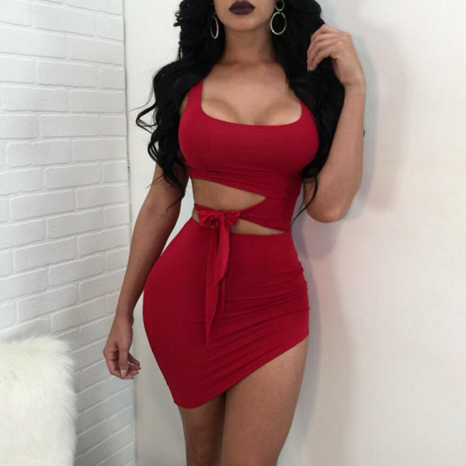
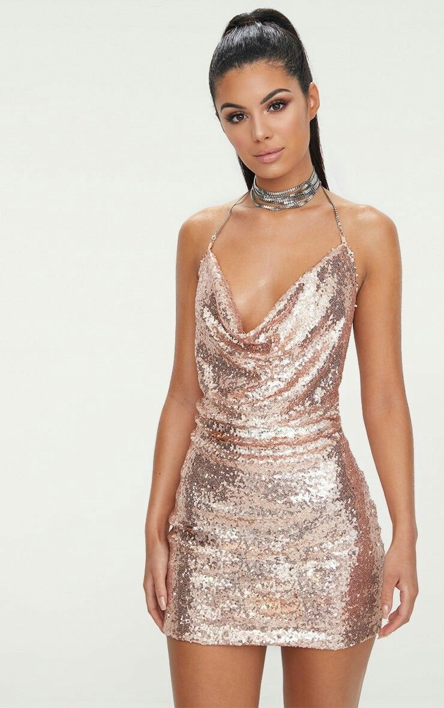

Un vestido de novia o vestido de casamiento es la prenda utilizada por las novias durante la ceremonia de la boda. La importancia del color, del estilo y del ceremonial del vestido depende de la religión y de la cultura de los participantes..

CONJUNTOS
Un outfit es la combinación de prendas seleccionada para una ocasión especial. En definitiva, el conjunto elegido para vestir en el trabajo, en un plan de ocio o en una fiesta.

VESTIDOS DE FIESTA
Un vestido de fiesta es una prenda de vestir femenina, generalmente de alta costura y diseñado para brindar elegancia en eventos significativos. A esta prenda femenina se la conoce también con los nombres de vestido de noche o vestido de gala.